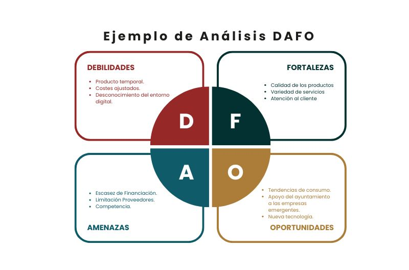
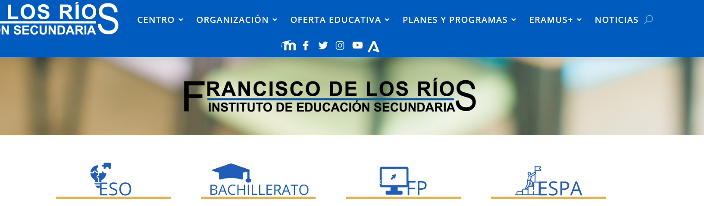
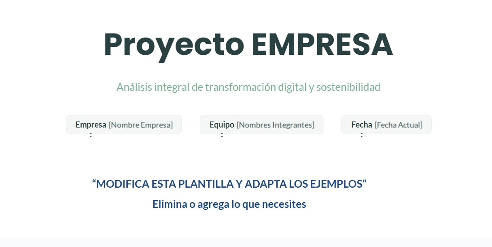

PROYECTO ECODIGITAL
FASE 2 – CULTURA DIGITAL
“¿Cómo de digital es esta empresa?”
En esta fase vais a trabajar como un equipo de consultores tecnológicos. Ya habéis recogido información en la fase anterior mediante Google Forms. Ahora el objetivo es analizar esa información y transformarla en conclusiones útiles.
Además, vamos a incorporar una perspectiva clave en la transformación digital actual: la eficiencia, la sostenibilidad y la alineación con los Objetivos de Desarrollo Sostenible (ODS) . No se trata solo de digitalizar, sino de hacerlo mejorando el impacto económico, ambiental y social de la empresa.
1. Parte teórica
1.1 Qué es la madurez digital
La madurez digital es el nivel en el que una empresa integra la tecnología en su forma de trabajar. No basta con tener herramientas, sino que deben estar bien utilizadas, conectadas y orientadas a mejorar resultados.
1.2 Niveles de madurez digital
- Nivel 1 – Inicial: procesos manuales, poco uso de tecnología
- Nivel 2 – Básico: herramientas aisladas como Excel o redes sociales
- Nivel 3 – Intermedio: algunos procesos digitalizados
- Nivel 4 – Avanzado: sistemas conectados (ERP, CRM)
- Nivel 5 – Digital 4.0: automatización, análisis de datos y optimización continua
1.3 Dimensiones de análisis
- Tecnología
- Software utilizado
- Automatización
- Uso de la nube
- Procesos
- Organización del trabajo
- Nivel de digitalización
- Eficiencia operativa
- Personas (RRHH)
- Nivel digital del equipo
- Formación
- Actitud ante el cambio
- Cliente
- Presencia online
- Comunicación digital
- Experiencia del usuario
- Sostenibilidad y eficiencia
- Uso eficiente de recursos (papel, energía, tiempo)
- Reducción de residuos
- Optimización de procesos
- Impacto ambiental de la actividad
- ODS (Objetivos de Desarrollo Sostenible)
- Relación con ODS como:
- ODS 8 (trabajo decente y crecimiento económico)
- ODS 9 (industria, innovación e infraestructura)
- ODS 12 (producción y consumo responsables)
- ODS 13 (acción por el clima)
En esta fase vais a trabajar como un equipo de consultores tecnológicos. Ya habéis recogido información en la fase anterior mediante Google Forms. Ahora el objetivo es analizar esa información y transformarla en conclusiones útiles.
Pero aquí está el salto importante: no vais a limitaros a decir “qué tiene la empresa”, sino qué significa eso y qué consecuencias tiene . Es decir, pasar de datos a diagnóstico.
Además, vamos a incorporar una perspectiva clave en la transformación digital actual: la eficiencia, la sostenibilidad y la alineación con los ODS . Una empresa no solo debe digitalizarse, sino hacerlo mejorando:
- su productividad
- su uso de recursos
- su impacto ambiental y social
Contexto profesional (lo que haría un consultor real)

En el mundo real, una consultora tecnológica:
- Recoge información (fase 1)
- La analiza
- Detecta problemas y oportunidades
- Propone mejoras
Vosotros estáis ahora en el paso 2 y 3 , que son los más importantes, porque aquí es donde se decide todo lo demás.

Qué significa analizar (más allá de leer datos)
No basta con decir:
- “La empresa no tiene web”
Hay que ir más allá:
- “La empresa no tiene web → pierde visibilidad → pierde clientes → menor competitividad”
Ese es el nivel que buscamos.
+ Ejemplos
Ejemplo 1 – Presencia digital
- Dato: no tiene página web
- Análisis: depende del boca a boca
- Consecuencia: crecimiento limitado
- Impacto ODS:
- ODS 8 (crecimiento económico) afectado negativamente

Ejemplo 2 – Procesos internos
- Dato: facturación en papel
- Análisis: proceso lento y propenso a errores
- Consecuencia: pérdida de tiempo y recursos
- Mejora posible: digitalización
- Impacto:
- más eficiencia
- menos papel → ODS 12 (consumo responsable)
Ejemplo 3 – Cultura digital
- Dato: trabajadores sin formación digital
- Análisis: resistencia al cambio
- Consecuencia: dificultad para implantar mejoras
- Impacto:
- frena innovación → ODS 9
Ejemplo 4 – Infraestructura
- Dato: no usan herramientas en la nube
- Análisis: trabajo poco flexible
- Consecuencia: menor productividad
- Mejora:
- uso de servicios cloud
- Impacto:
- eficiencia operativa
- reducción de costes
Cómo debéis enfocar esta fase
Trabajad siempre con esta lógica:
- Qué ocurre (dato)
- Qué significa (análisis)
- Qué provoca (impacto)
- Qué se podría mejorar (idea inicial)
Idea clave que debéis tener clara
No estáis haciendo un trabajo teórico. Estáis simulando una situación real donde una empresa necesita ayuda.
Y vuestra función es:
- entender su problema
- explicarlo claramente
- preparar el terreno para solucionarlo
Si quieres, en el siguiente paso puedo darte una actividad guiada tipo “caso práctico resuelto” para que el alumnado vea exactamente cómo se hace antes de ponerse a trabajar.
2. Parte práctica
Trabajaréis analizando los datos con apoyo de herramientas como Microsoft Excel
2.1 Análisis de datos
Identificad:
- Problemas repetidos
- Carencias digitales
- Ineficiencias (tiempo, recursos, procesos)
- Impactos negativos en sostenibilidad (uso excesivo de papel, energía, etc.)
- Buenas prácticas detectadas
2.2 Diagnóstico de madurez digital
- Asignad un nivel del 1 al 5
- Justificad con datos del formulario
2.3 Identificación de áreas digitalizables (RA5.b)
Detectad al menos tres áreas de mejora incluyendo:
- Mejora de eficiencia
- Reducción de costes
- Reducción de impacto ambiental
Formato:
Área: Problema: Mejora: Impacto esperado (eficiencia/sostenibilidad):
2.4 Análisis de cultura digital
Reflexionad sobre:
- Preparación del equipo
- Resistencia al cambio
- Necesidades formativas
- Sensibilidad hacia sostenibilidad y digitalización
2.5 Relación con sostenibilidad y ODS
Analizad:
- ¿La empresa genera residuos innecesarios?
- ¿Podría reducir consumo de papel o energía con digitalización?
- ¿Qué ODS podría mejorar con cambios digitales?
2.6 Conclusión
Valorad:
- Nivel digital actual
- Nivel de eficiencia
- Nivel de sostenibilidad
- Potencial de mejora
3. Tarea a entregar (plantilla rellenable)
INFORME FASE 2 – CULTURA DIGITAL Y SOSTENIBILIDAD
- Nombre de la empresa: ....................................................
- Nivel de madurez digital (1-5): ....................................................
- Justificación del nivel: .................................................... ....................................................
- Análisis por dimensiones
4.1 Tecnología: ....................................................
4.2 Procesos: ....................................................
4.3 Personas (RRHH): ....................................................
4.4 Cliente: ....................................................
4.5 Eficiencia: ....................................................
4.6 Sostenibilidad: ....................................................
- Áreas digitalizables
Área 1: Problema: ......................................... Mejora: ............................................ Impacto (eficiencia/sostenibilidad): ..............
Área 2: Problema: ......................................... Mejora: ............................................ Impacto (eficiencia/sostenibilidad): ..............
Área 3: Problema: ......................................... Mejora: ............................................ Impacto (eficiencia/sostenibilidad): ..............
- Cultura digital del equipo
.................................................... ....................................................
- Relación con ODS
ODS identificados: ................................
Justificación: .................................................... ....................................................
- Conclusión final
.................................................... ....................................................
aActividad
FASE 2 – CULTURA DIGITAL
Actividad: Presentación del diagnóstico a la empresa
En esta fase vamos a dar un paso más profesional al proyecto. El trabajo realizado no se queda en el aula: vais a presentar vuestros resultados como si fuerais un equipo de consultoría ante la empresa.
El objetivo es doble:
- Comunicar de forma clara el nivel de madurez digital detectado
- Abrir la puerta a la siguiente fase del proyecto, donde se propondrán soluciones
1. Enfoque de la actividad
Para cada empresa se elaborará una presentación estructurada (tipo reunión profesional) utilizando herramientas como Google Slides o PowerPoint.
La presentación debe ser clara, visual y centrada en aportar valor. No se trata de “leer diapositivas”, sino de explicar, justificar y convencer .
PLANTILLA FASE 2:
Usa la siguiente plantilla (Enlace)

2. Estructura obligatoria de la presentación
1. Introducción
- Presentación del equipo
- Empresa analizada
- Objetivo del análisis
2. Metodología
- Uso del cuestionario (Google Forms)
- Tipo de análisis realizado
- Qué datos se han tenido en cuenta
3. Diagnóstico de madurez digital
- Nivel asignado (1–5)
- Justificación clara con ejemplos
4. Análisis por dimensiones
Debe incluir:
- Tecnología
- Procesos
- Personas (RRHH)
- Cliente
- Eficiencia
- Sostenibilidad
5. Problemas detectados
- Principales carencias
- Ineficiencias
- Riesgos o limitaciones
6. Áreas digitalizables
Para cada área:
- Qué problema existe
- Qué se podría mejorar
- Qué impacto tendría (eficiencia, costes, sostenibilidad)
7. Relación con ODS
- Qué ODS se pueden mejorar
- Justificación breve y clara
8. Conclusión
- Situación actual
- Potencial de mejora
- Mensaje final a la empresa
9. Preguntas para la empresa (muy importante)
Aquí está el salto de nivel del proyecto.
Debéis incluir entre 3 y 5 preguntas dirigidas a la empresa para:
- Validar vuestro análisis
- Obtener información adicional
- Preparar la siguiente fase
Ejemplos:
- ¿Estarían dispuestos a invertir en digitalización?
- ¿Qué procesos consideran más problemáticos?
- ¿Han intentado digitalizar alguna parte antes?
3. Producto final
Cada grupo entregará:
- Presentación (diapositivas)
- Exposición oral (simulación o real)
- Documento breve con preguntas a la empresa
4. Criterios de calidad
Se valorará especialmente:
- Claridad en la explicación
- Uso de datos reales (no opiniones)
- Capacidad de análisis
- Relación con eficiencia y sostenibilidad
- Profesionalidad en la presentación
💻 Moodle & Portfolio
- Sube el enlace actualizado tu portfolio a Moodle y, si has generado algún archivo PDF o similar, súbelo también.
- Conclusiones de tu entrevista con la empresa escogida